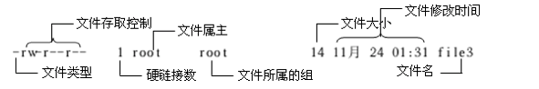

05-Linux 常用命令
需要熟练掌握的常用命令¶
- ls
- clear
- cd
- pwd
- mkdir
- rm
- cp
- mv
- touch
查看文件信息：ls¶
ls是英文单词list的简写，其功能为列出目录的内容，是用户最常用的命令之一，它类似于DOS下的dir命令。Linux文件或者目录名称最长可以有265个字符，“.”代表当前目录，“..”代表上一级目录，以“.”开头的文件为隐藏文件，需要用 -a 参数才能显示。
ls常用参数：
| 参数 | 含义 |
|---|---|
| -a | 显示指定目录下所有子目录与文件，包括隐藏文件 |
| -l | 以列表方式显示文件的详细信息 |
| -h | 配合 -l 以人性化的方式显示文件大小 |
poplar@PoplarTang:~/Lesson/Test$ ls -al
total 0
drwxrwxrwx 1 poplar poplar 512 May 9 10:59 .
drwxrwxrwx 1 poplar poplar 512 May 9 10:59 ..
drwxrwxrwx 1 poplar poplar 512 May 9 10:59 TestDir
drwxrwxrwx 1 poplar poplar 512 May 9 10:59 a
-rw-rw-rw- 1 poplar poplar 0 May 9 10:59 haha.txt
输出信息含义：

通配符：
与DOS下的文件操作类似，在Unix/Linux系统中，也同样允许使用特殊字符来同时引用多个文件名，这些特殊字符被称为通配符。只要和文件或文件夹描述相关的地方几乎都可以使用通配符
| 通配符 | 使用 | 含义 |
|---|---|---|
| * | ls * | *代表文件名中所有字符 |
| ls te* | 查找以te开头的文件 | |
| ls *html | 查找结尾为html的文件 | |
| ？ | ls ? | 代表文件名中任意一个字符，列出文件名只有一个字符的文件、文件夹 |
| ls ?.c | 只找第一个字符任意，后缀为.c的文件 | |
| ls a.? | 只找文件名为a，后缀名为任意一个字符的文件 | |
| [] | ls [ab] | [”和“]”将字符组括起来，表示可以匹配字符组中的任意一个。 “-”用于表示字符范围。 |
| [abc] | 匹配a、b、c中的任意一个 | |
| [a-f] | 匹配从a到f范围内的的任意一个字符 | |
| ls [a-f]* | 找到从a到f范围内的的任意一个字符开头的文件 | |
| ls a-f | 查找文件名为a-f的文件,当“-”处于方括号之外失去通配符的作用 | |
| \ | ls \? | 如果要使通配符作为普通字符使用，可以在其前面加上转义字符。 “?”和“*”处于方括号内时不用使用转义字符就失去通配符的作用。 |
| ls \*a | 查找文件名为*a的文件 |
清屏：clear¶
clear作用为清除终端上的显示(类似于DOS的cls清屏功能)
也可使用快捷键：Ctrl + l ( “l” 为字母L的小写 )。
切换工作目录：cd¶
在使用Unix/Linux的时候，经常需要更换工作目录。cd命令可以帮助用户切换工作目录。Linux所有的目录和文件名大小写敏感
cd后面可跟绝对路径，也可以跟相对路径。如果省略目录，则默认切换到当前用户的主目录。
| 命令 | 含义 |
|---|---|
| cd | 切换到当前用户的主目录(/home/用户目录)， 用户登陆时，默认的目录就是用户的主目录。 |
| cd ~ | 切换到当前用户的主目录(/home/用户目录) |
| cd . | 切换到当前目录 |
| cd .. | 切换到上级目录 |
| cd - | 可进入上次所在的目录 |
| cd / | 切换到系统根目录/ |
如果路径是从根路径开始的，则路径的前面需要加上 “ / ”，如 “ /mnt ”，通常进入某个目录里的文件夹，前面不用加 “ / ”。
显示当前路径：pwd¶
使用pwd命令可以显示当前的工作目录，该命令很简单，但又很常用，直接输入pwd即可，后面不带参数。
创建目录：mkdir¶
通过mkdir命令可以创建一个新的目录。参数-p可递归创建目录。
需要注意的是新建目录的名称不能与当前目录中已有的目录或文件同名，并且目录创建者必须对当前目录具有写权限。
使用：
mkdir TestDir
mkdir -p a/b/c/d
poplar@PoplarTang:~/Lesson/Test$ mkdir TestDir
poplar@PoplarTang:~/Lesson/Test$ mkdir -p a/b/c/d
poplar@PoplarTang:~/Lesson/Test$ tree
.
├── TestDir
├── a
│ └── b
│ └── c
│ └── d
└── haha.txt
5 directories, 1 file
删除文件：rm¶
可通过rm删除文件或目录。使用rm命令要小心，因为文件删除后不能恢复。为了防止文件误删，可以在rm后使用-i参数以逐个确认要删除的文件。
常用参数及含义如下表所示：
| 参数 | 含义 |
|---|---|
| -i | 以进行交互式方式执行 |
| -f | 强制删除，忽略不存在的文件，无需提示 |
| -r | 递归地删除目录下的内容，删除文件夹时必须加此参数 也可使用 rmdir删除一个空目录 |
删除文件：（可一次删除多个）
rm xxx.txt aaa.txt
删除目录：
rm -r test_dir
拷贝：cp¶
cp命令的功能是将给出的文件或目录复制到另一个文件或目录中，相当于DOS下的copy命令。
常用选项说明：
| 选项 | 含义 |
|---|---|
| -a | 该选项通常在复制目录时使用，它保留链接、文件属性，并递归地复制目录 简单而言，保持文件原有属性。 |
| -f | 已经存在的目标文件而不提示 |
| -i | 交互式复制，在覆盖目标文件之前将给出提示要求用户确认 |
| -r | 若给出的源文件是目录文件，则cp将递归复制该目录下的所有子目录和文件 目标文件必须为一个目录名。 |
| -v | 显示拷贝进度 |
移动、重命名：mv¶
用户可以使用mv命令来移动文件或目录，也可以给文件或目录重命名。
常用选项说明：
| 选项 | 含义 |
|---|---|
| -f | 禁止交互式操作，如有覆盖也不会给出提示 |
| -i | 确认交互方式操作，如果mv操作将导致对已存在的目标文件的覆盖 系统会询问是否重写，要求用户回答以避免误覆盖文件 |
| -v | 显示移动进度 |
创建文件：touch¶
用户可以通过touch来创建一个空的文件，demo如下：
touch hello.txt
说明：
- 则会在当前路径下创建名字为hello.txt的空文件
- Linux系统中没有严格的后缀（格式），所以创建文件时可以命名为任意的文件名
查看系统信息¶
查看系统版本¶
- 发行版本号
lsb_release -a
- 内核版本及系统位数
uname -a
- 内核版本及gcc版本
cat /proc/version
查看硬件信息¶
- cpu信息
cat /proc/cpuinfo or lscpu
- 内存信息
sudo dmidecode -t memory
运行时信息¶
top实时CPU&内存使用情况free当前内存占用情况ps -aux查看当前进程状态（CPU、内存占用、开启时间）kill根据进程pid杀死指定进程，可以配合参数-9强制杀死